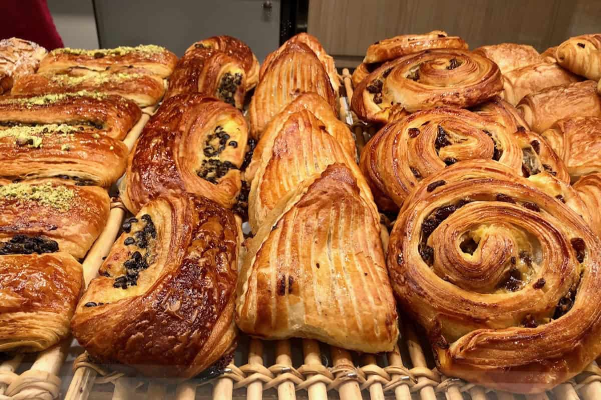
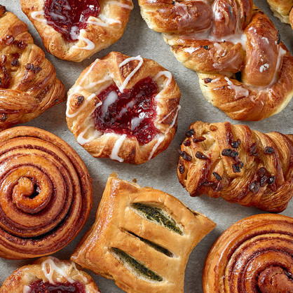

Pastries

Pastries are delightful treats! They are usually sweet or tart. Some, however, can be savory. They are usually a side dish, although you can eat them as a meal. Pastries are usually stuffed with fruits. They can also be filled with vegetables. The wonderful thing about pastries is that they can be eaten anytime. Try them for breakfast with a hot or cold drink. You can also choose to have them after dinner as a dessert! Either way, they are a WIN!
History of Pastries

The history of Pastries is quite spectacular! Although most people would guess that pastries originated in France, the reality is suprising. The earliest pastry has been known to originate from Egypt, Judea, and Greece. Egyptians used pastries as a mean to keep meat moist when cooking. They did this by wrapping dough or bread around the meat. Judeans used pastries in their temple sacrifices, by frying unleavened or leavened dough. The Greeks also used pastries in various ceremonies. Today, many people all around the world enjoy pastries for any occasion!